Logistic regression
Lecture 19
Dr. Mine Çetinkaya-Rundel
Duke University
STA 199 - Fall 2024
November 7, 2024
When last we left our heros…
We have been studying regression:
Recap: simple linear regression
Numerical response and one numerical predictor:
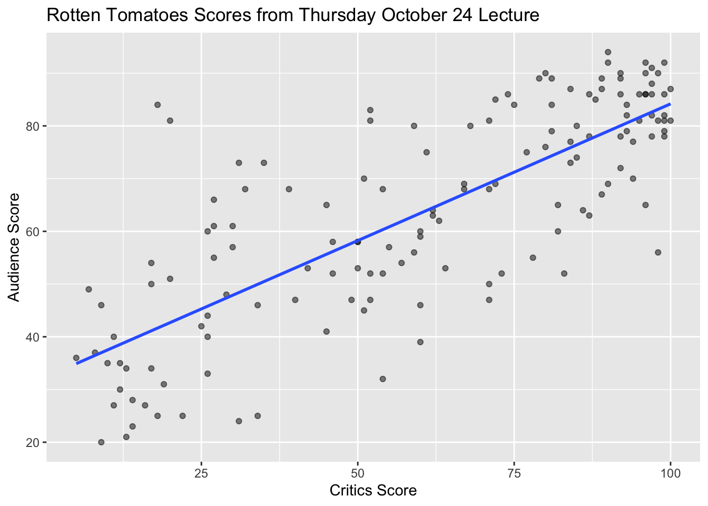Recap: simple linear regression
Numerical response and one categorical predictor (two levels):
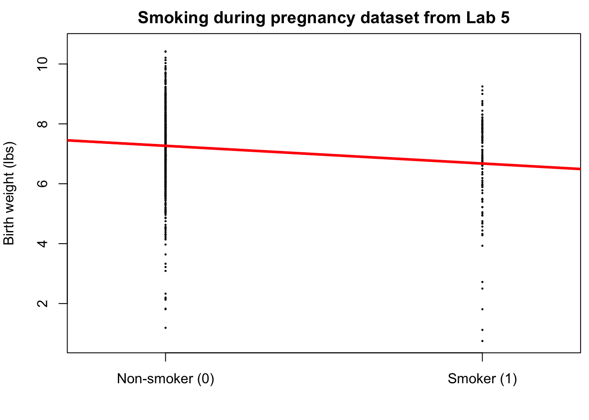Recap: multiple linear regression
Numerical response; numerical and categorical predictors:
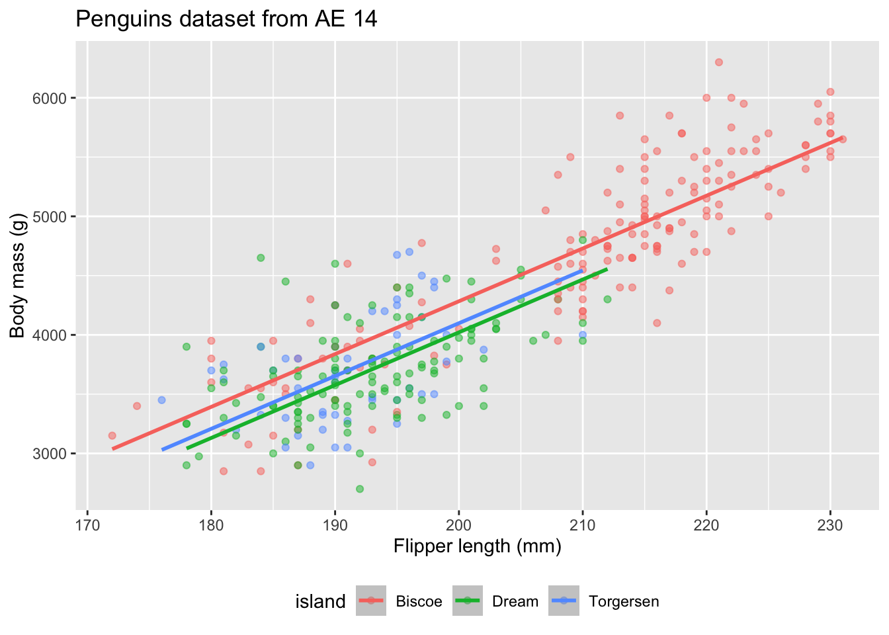Today: a binary response
\[
y =
\begin{cases}
1 & &&\text{eg. Yes, Win, True, Heads, Success}\\
0 & &&\text{eg. No, Lose, False, Tails, Failure}.
\end{cases}
\]

Who cares?
If we can model the relationship between predictors (\(x\)) and a binary response (\(y\)), we can use the model to do a special kind of prediction called classification.
Example: is the e-mail spam or not?
\[
\mathbf{x}: \text{word and character counts in an e-mail.}
\]
\[
y
=
\begin{cases}
1 & \text{it's spam}\\
0 & \text{it's legit}
\end{cases}
\]
Ethical concerns?
Example: is it cancer or not?
\[
\mathbf{x}: \text{features in a medical image.}
\]

\[
y
=
\begin{cases}
1 & \text{it's cancer}\\
0 & \text{it's healthy}
\end{cases}
\]
Ethical concerns?
Example: will they default?
\[
\mathbf{x}: \text{financial and demographic info about a loan applicant.}
\]

\[
y
=
\begin{cases}
1 & \text{applicant is at risk of defaulting on loan}\\
0 & \text{applicant is safe}
\end{cases}
\]
Ethical concerns?
Example: will they re-offend?
\[
\mathbf{x}: \text{info about a criminal suspect and their case.}
\]
\[
y
=
\begin{cases}
1 & \text{suspect is at risk of re-offending pre-trial}\\
0 & \text{suspect is safe}
\end{cases}
\]
Ethical concerns?
How do we model this type of data?

Straight line of best fit is a little silly
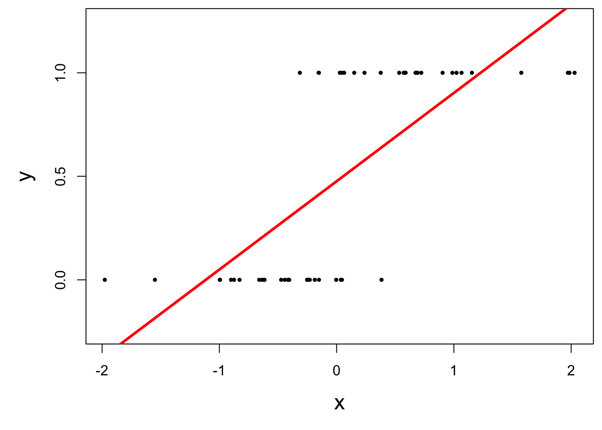Instead: S-curve of best fit
Instead of modeling \(y\) directly, we model the probability that \(y=1\):
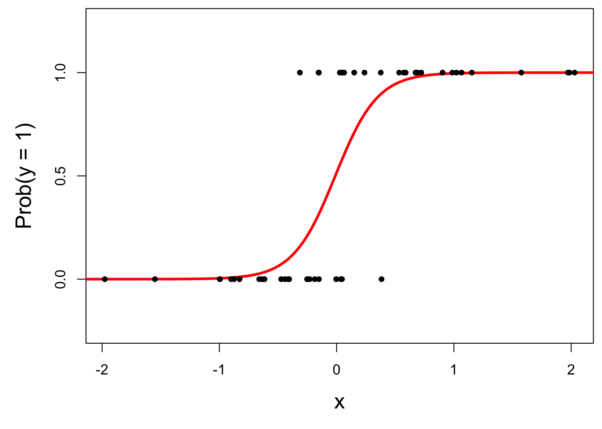
- “Given new email, what’s the probability that it’s spam?’’
- “Given new image, what’s the probability that it’s cancer?’’
- “Given new loan application, what’s the probability that they default?’’
Why don’t we model y directly?
So, what is this S-curve, anyway?
It’s the logistic function:
\[
\text{Prob}(y = 1)
=
\frac{e^{\beta_0+\beta_1x}}{1+e^{\beta_0+\beta_1x}}.
\]
If you set p = Prob(y = 1) and do some algebra, you get the simple linear model for the log-odds:
\[
\log\left(\frac{p}{1-p}\right)
=
\beta_0+\beta_1x.
\]
This is called the logistic regression model.
Log-odds?
“The odds of this lecture going well are 10 to 1.”
- The log odds log(p / (1 - p)) is a number between \(-\infty\) and \(\infty\), which is suitable for the linear model.
Logistic regression
\[
\log\left(\frac{p}{1-p}\right)
=
\beta_0+\beta_1x.
\]
Estimation
\[
\log\left(\frac{\widehat{p}}{1-\widehat{p}}\right)
=
b_0+b_1x.
\]
Logistic regression -> classification?
Step 1: pick a threshold
Select a number \(0 < p^* < 1\):
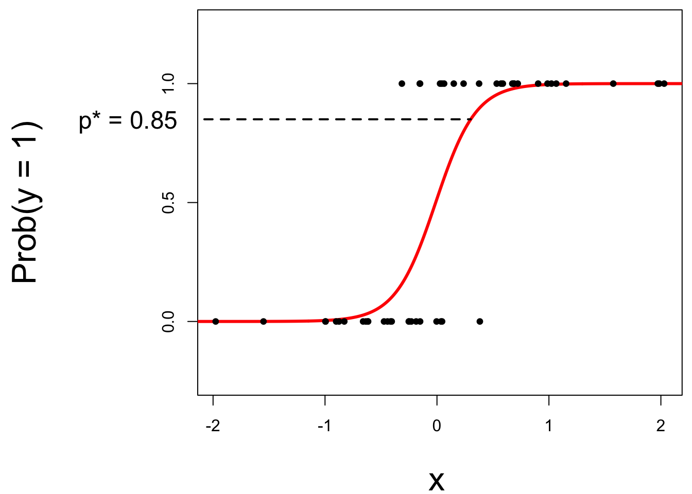
- if \(\text{Prob}(y=1)\leq p^*\), then predict \(\widehat{y}=0\);
- if \(\text{Prob}(y=1)> p^*\), then predict \(\widehat{y}=1\).
Step 2: find the “decision boundary”
Solve for the x-value that matches the threshold:
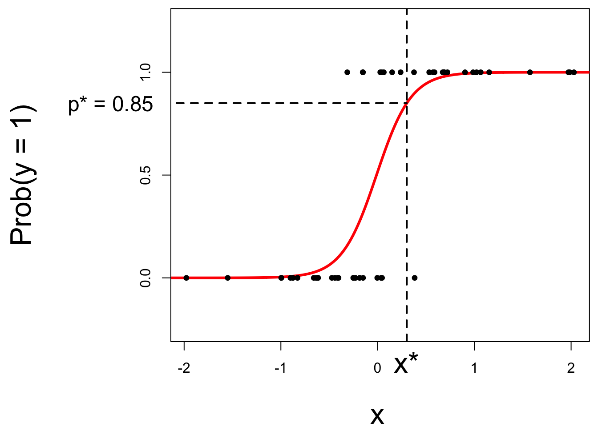
- if \(\text{Prob}(y=1)\leq p^*\), then predict \(\widehat{y}=0\);
- if \(\text{Prob}(y=1)> p^*\), then predict \(\widehat{y}=1\).
Step 3: classify a new arrival
A new person shows up with \(x_{\text{new}}\). Which side of the boundary are they on?
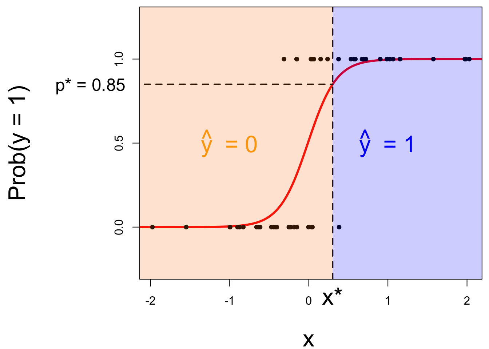
- if \(x_{\text{new}} \leq x^\star\), then \(\text{Prob}(y=1)\leq p^*\), so predict \(\widehat{y}=0\) for the new person;
- if \(x_{\text{new}} > x^\star\), then \(\text{Prob}(y=1)> p^*\), so predict \(\widehat{y}=1\) for the new person.
Let’s change the threshold
A new person shows up with \(x_{\text{new}}\). Which side of the boundary are they on?
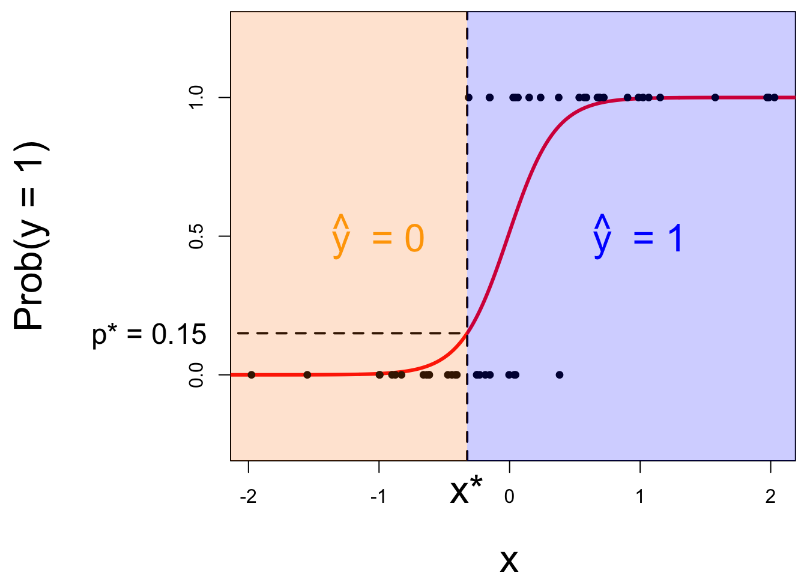
- if \(x_{\text{new}} \leq x^\star\), then \(\text{Prob}(y=1)\leq p^*\), so predict \(\widehat{y}=0\) for the new person;
- if \(x_{\text{new}} > x^\star\), then \(\text{Prob}(y=1)> p^*\), so predict \(\widehat{y}=1\) for the new person.
Nothing special about one predictor…
Two numerical predictors and one binary response:
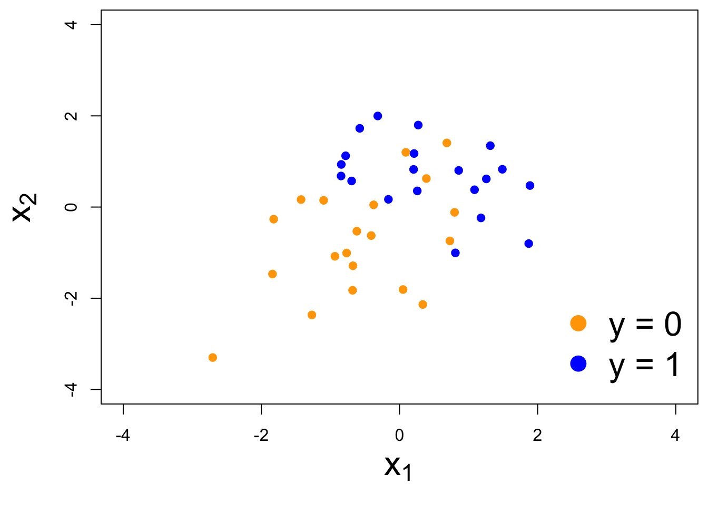“Multiple” logistic regression
On the probability scale:
\[
\text{Prob}(y = 1)
=
\frac{e^{\beta_0+\beta_1x_1+\beta_2x_2+...+\beta_mx_m}}{1+e^{\beta_0+\beta_1x_1+\beta_2x_2+...+\beta_mx_m}}.
\]
For the log-odds, a multiple linear regression:
\[
\log\left(\frac{p}{1-p}\right)
=
\beta_0+\beta_1x_1+\beta_2x_2+...+\beta_mx_m.
\]
Decision boundary, again
It’s linear! Consider two numerical predictors:
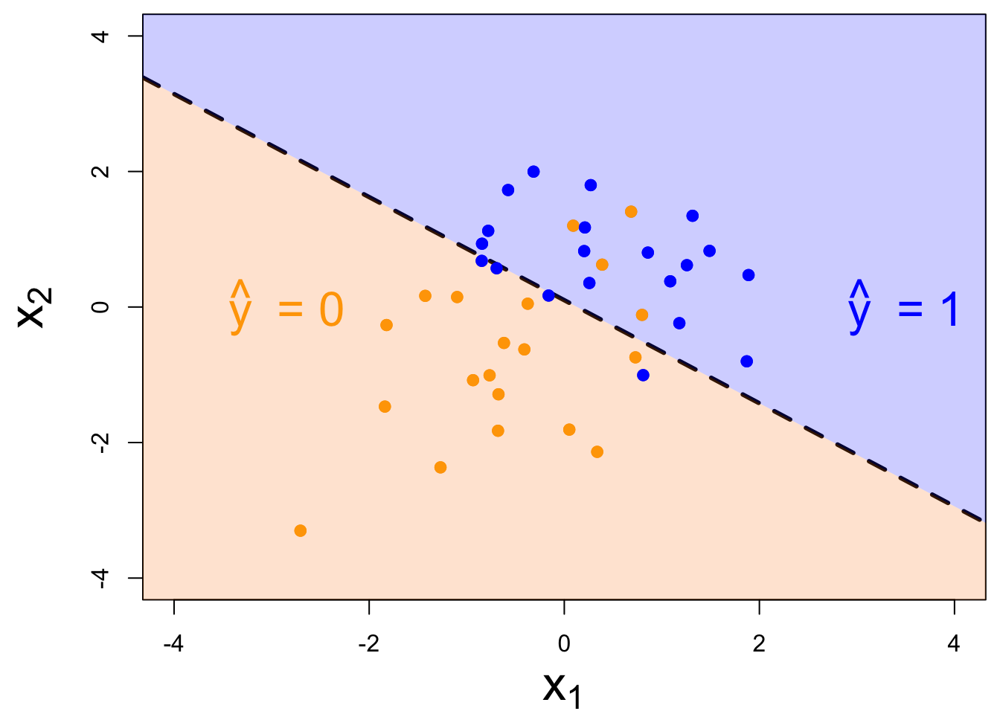
- if new \((x_1,\,x_2)\) below, \(\text{Prob}(y=1)\leq p^*\). Predict \(\widehat{y}=0\) for the new person;
- if new \((x_1,\,x_2)\) above, \(\text{Prob}(y=1)> p^*\). Predict \(\widehat{y}=1\) for the new person.